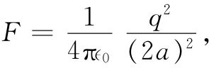

作为这种方法最简单的应用之一，让我们利用图6-8中的等势面B。有了它，便能求解在一块导电板面前放置一个电荷的问题。我们只需勾消该图左边的一半。有关这一解答的场线如图6-10所示。注意该平面，由于在两电荷的正中间，所以具有零势。这样，我们就解决了在一接地的导电板附近有一个正电荷的问题。
对于整个电场至今我们已告解决，但造成这场的真实 电荷究竟怎样呢？除了这个正点电荷之外，由于受到该正电荷（从老远处起）所吸引，所以在导电板上出现一些感生负电荷。现在，假定由于某种技术原因——或出自好奇心——你想知道那些负电荷在该表面上是怎样分布的。那你可以利用我们在§5-9中由高斯定律所算出的结果求出面电荷密度，贴近导体外面的电场法向分量就等于面电荷密度σ除以∈0 。从表面处电场的法向分量倒过来计算，我们可以获得表面上任一点的电荷密度。因为我们已知道各处的场，所以就知道面电荷密度。
考虑板面上一点，它与正对着正电荷的那一点距离为ρ（图6-10）。在这一点的电场垂直指向该表面。来自该正 电荷的场其法向分量为
对此还必须加上由那个负的镜像电荷产生的电场。这不过使该法向分量加倍（并抵消了所有其他之场），因而在该表面任一点的电荷密度σ就是
图6-10 在一导电平面附近一个电荷的场，用镜像法求得
对上述结果的一种有趣核对，仍是在整个面上对σ进行积分。我们求得总感生电荷为-q，理应如此。
还有另一个问题：是否有力作用在点电荷上？有的，因为有来自板上的感生负面电荷的吸引力。现在我们已知道面电荷的分布（式6.29），本来可通过积分算出对该正点电荷的作用力。但我们也知道，作用于该正电荷上的力应该 与用一负的镜像电荷来代替那块平板所产生的力完全相同，因为在正电荷附近的场在这两种情况下都相同。该点电荷会感到一个指向板面的力而其大小为
 （6.30）
这样，比对所有负电荷取积分而求得力要容易得多。